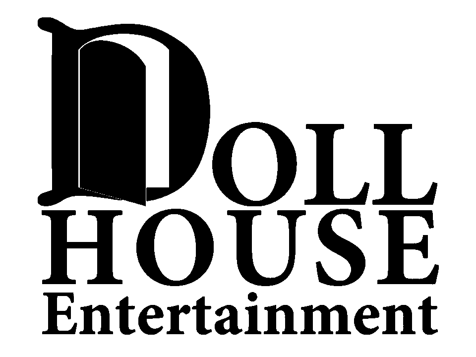
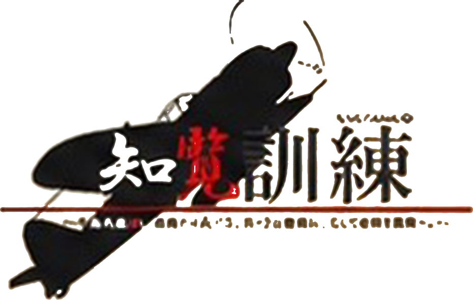
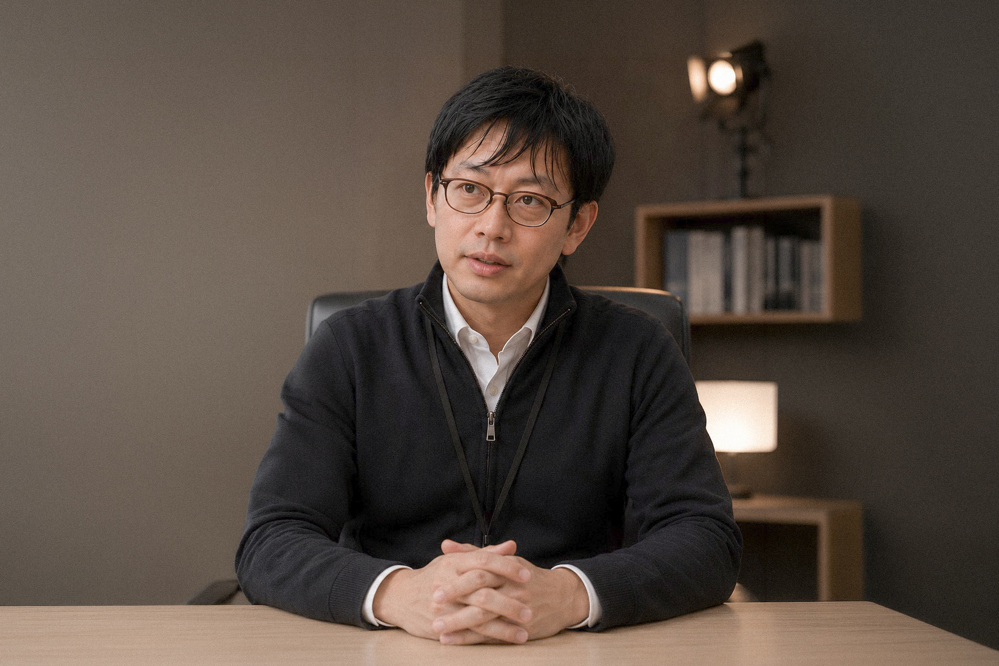
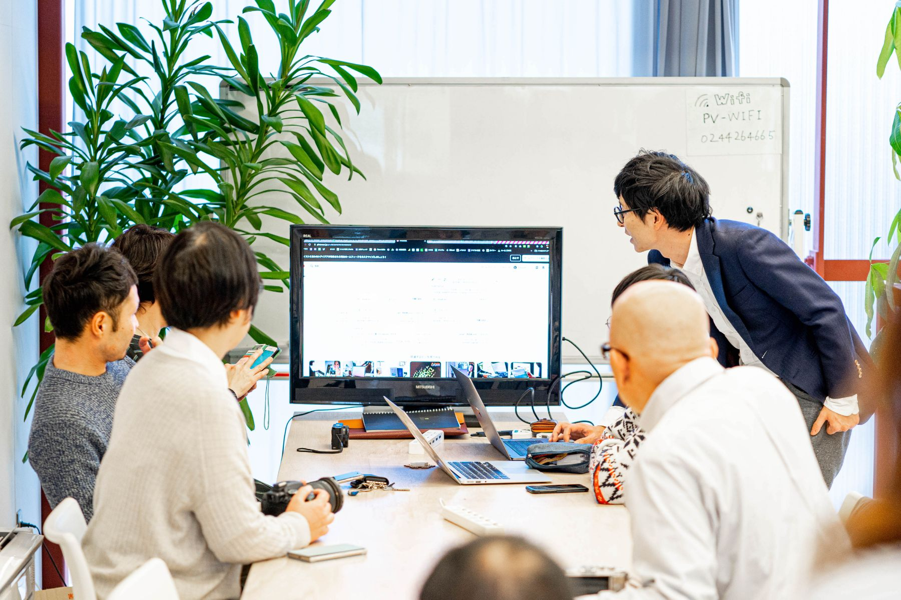
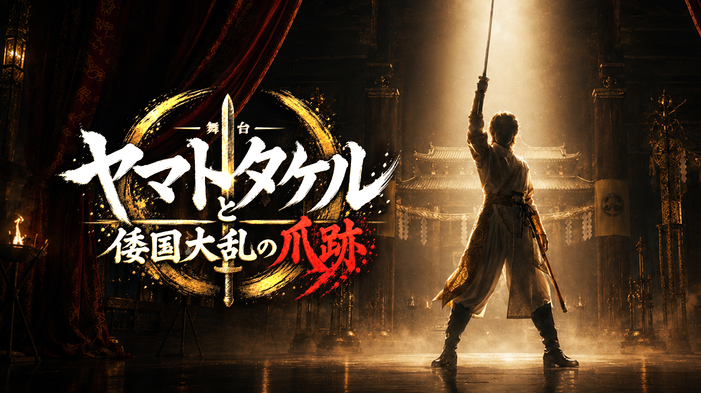
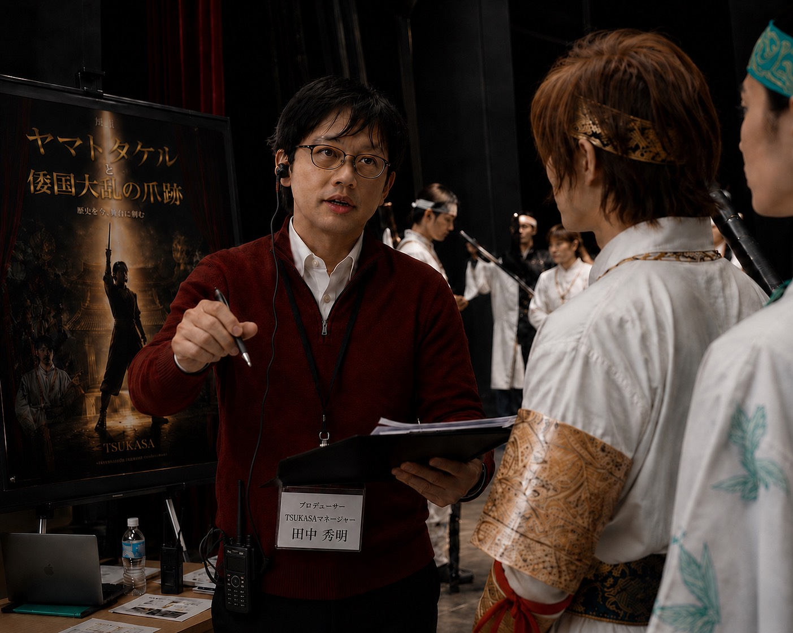
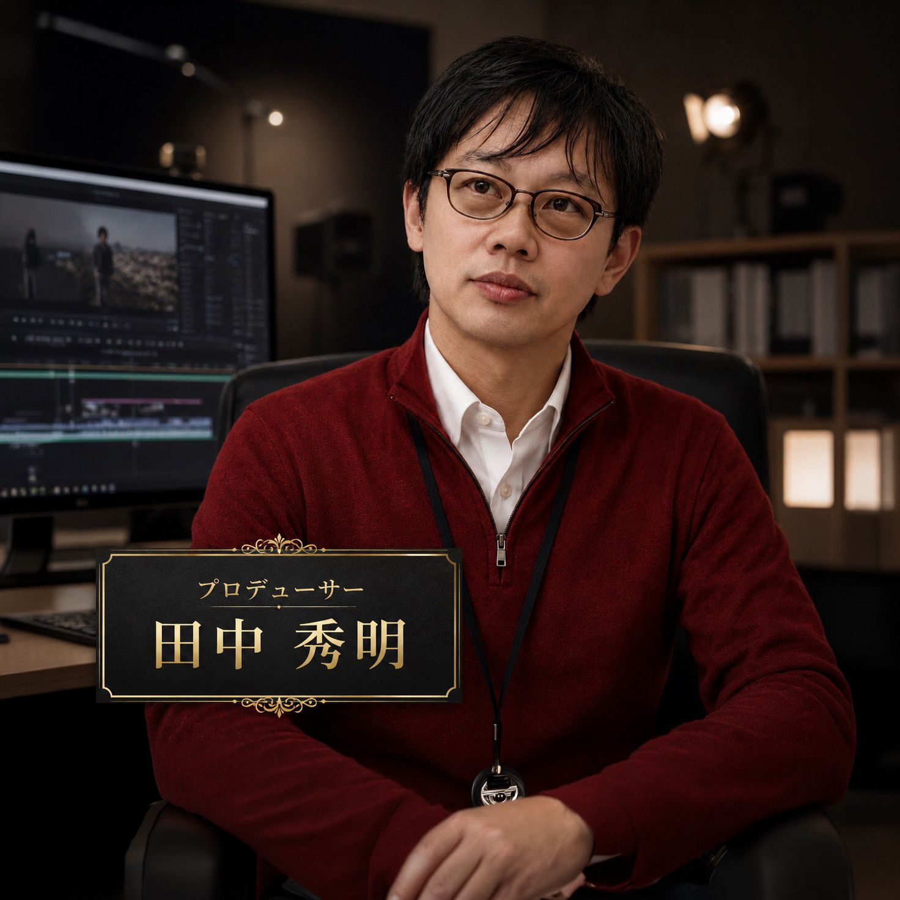

01
社員教育を実施しても、現場でなかなか定着しない

DOLLHOUSE Entertainment
株式会社ドールハウス・エンターテインメント
社員教育Lab.は、企業ごとの経営課題に合わせた実践型の教育プログラムを設計し、社員一人ひとりの意識と行動が変わる成長の仕組みづくりを支援します。
社員教育・広告代理店・芸能プロダクションの3つの事業を通じて、人と企業、表現活動の可能性を広げています。
Problem
研修を実施しても現場が動かない。育成、採用、発信の打ち手が分断されている。そんな経営課題を、実践型の教育設計から整理します。
社員教育を実施しても、現場でなかなか定着しない
幹部候補を育てたいが、社内に育成の仕組みがない
社員の意識や行動を変えたいが、何から始めればよいかわからない
自社に合う研修や教育プログラムが見つからない
助成金・補助金を活用したいが、対象制度や申請方法がわからない
採用・広告・イベント・発信まで、企業成長につながる相談をまとめて行いたい
Solution
社員教育Lab.は、企業ごとの経営課題や将来ビジョンを分析し、その会社に必要な教育プログラムを設計します。
座学で終わらせず、社員の意識と行動が変わり、組織の成長につながる実践型の社員教育を提供します。

経営課題や将来ビジョンから逆算し、企業ごとに必要な教育内容を組み立てます。
知識の提供で終わらせず、現場での改善行動と成果につながる状態を目指します。
一人ひとりの可能性を見抜き、磨き、企業の未来を支える力へ育てます。
Process
売上、人財定着、管理職育成、企業文化など、経営者様の課題を整理します。
企業ごとの目標に合わせて、既製品ではない教育プログラムを組み立てます。
学びを現場で活かし、社員一人ひとりが成果を生み出す状態へ導きます。
Strength
教育を単なる研修で終わらせず、経営者の想いと現場の変化をつなぐ仕組みとして設計します。
経営課題と将来ビジョンから逆算し、その会社だけの教育を組み立てます。
教育会社の都合ではなく、企業ごとの課題と未来から逆算して設計します。
社員が自ら稼ぐ力を身につけるために、会社が贈る未来への投資です。
売上向上、人財定着、組織活性化を支える教育システムを形にします。
学びたい自発性と、講師の覚悟が重なる成長の瞬間をつくります。
Five Perspectives
学びを成果に変えるために、有難み、感謝、気づき、覚悟、実践の視点を大切にしています。
Representative Message
芸能界プロデューサーが人財育成を手掛ける価値は、講師個人を前面に出すことではありません。
本質は、訓練生一人ひとりの成長に向き合い、可能性を見抜き、伸ばし、成果へつなげる育成ノウハウにあります。
田中秀明は、演出家であり、コーチです。主役は講師ではなく、訓練生である。その信条をもとに、社員一人ひとりが自らの力で成長し、企業の未来を支える人財となるための教育を設計します。
社員教育Lab.が最も大切にしている考え方は、マーケットインです。教育会社の都合で作られた既製品の研修ではなく、企業ごとの経営課題や将来ビジョンを分析し、その会社だけの教育プログラムを設計します。
社員教育とは、社員が自ら稼ぐ力を身につけるために、会社が贈る最大の福利厚生であると考えています。学びを現場の改善行動へ落とし込み、社員一人ひとりの市場価値と企業の成長を同時に高めることを目指します。
訓練生が「学びたい」と自ら動き出す自発性と、講師が同じ覚悟で向き合う力。その双方が重なる瞬間に、殻を破る成長が生まれます。社員教育Lab.では、この考え方を実践型教育の根幹に置いています。
企業ごとの課題に合わせた実践型教育。
経営者・ビジネスパーソンの意識と行動を磨く学びの場。

歴史から使命感・責任感・行動力を学ぶ教育プログラム。
成果を出す考え方、行動力、仕事への向き合い方を育成します。
部下育成、判断基準、組織を動かす視点を磨きます。
仕事への向き合い方、目標設定、主体的に動く姿勢を育てます。
学びを実践へ移し、現場で改善行動を起こす力を高めます。
相手の考えを引き出し、成長を促す対話力を訓練します。
Results
上記は、社員教育Lab.および関連する人財育成支援の実績として掲載しています。

Instructor
田中秀明
株式会社ドールハウス・エンターテインメント 代表取締役 / 社員教育Lab. 主宰・講師 / 演出家・コーチ
田中秀明が大切にしているのは、講師自身を目立たせることではありません。主役は、訓練生です。
芸能・舞台の現場で培った観察力と演出力を、企業の人財育成へ応用します。一人ひとりの可能性を見抜き、成長に必要な道筋を描きます。
After Training
社員教育Lab.が目指すのは、受講して終わる研修ではなく、現場での意識と行動が変わる教育です。
指示型から、成長を引き出す関わりへ。部下の考えを引き出し、振り返りの質を高める関わり方を磨きます。
現場での声かけや判断基準が整理され、チームを育てる視点が生まれます。
作業者視点から、組織を動かす視点へ。自分の役割を捉え直し、判断基準と行動の優先順位を明確にします。
次世代リーダーとして、現場を見る力と任される覚悟を育てます。
単発研修から、会社の文化を育てる教育へ。社員教育を経営課題として捉え、自社に合う設計へつなげます。
会社の未来を支える人財育成の方針が、より明確になります。
Business Fields
社員教育Lab.を主軸に、広告代理店事業、芸能プロダクション事業まで、経営課題と表現活動の可能性を一気通貫で支えます。
Education
社員教育Lab. / 倫理経済大学 / 知覧訓練 / プロビジネスパーソン育成プログラム
Advertising
SP広告 / 求人広告 / 媒体紹介 / イベント企画・制作・運営
Entertainment
劇団 天-TEN-運営 / TSUKASAプロモーション / 舞台制作 / 提携著名人のファンクラブ運営管理業務
Advertising
伝えるべき価値を、届く形へ。

商品・サービスの魅力を販促へつなげます。
必要な人財へ届く採用導線を設計します。
目的やターゲットに合わせて媒体をご提案します。
現場で伝わる体験型プロモーションを設計します。
広告の目的とターゲットを整理したうえで、認知、採用、販売促進、社内外のコミュニケーションまで一貫して設計します。企画から制作、運用までを一つの導線として組み立て、成果につなげます。
Entertainment
表現者を育てる現場力を、企業の人財育成へ。




Movie
芸能プロダクション事業では、劇団 天-TEN-の運営、舞台制作、TSUKASAプロモーション、提携著名人のファンクラブ運営管理業務を通じて、表現者の可能性を社会へつなげています。
舞台の現場で必要とされる観察力、演出力、育成力は、社員教育Lab.における「訓練生が主役となり、成長の道筋を描く」設計にも直結しています。
Company
株式会社ドールハウス・エンターテインメントは、社員教育、広告代理店、芸能プロダクションの3つの事業を通じて、人と企業、表現活動の可能性を社会へ届ける会社です。
株式会社ドールハウス・エンターテインメントは、社員教育Lab.を主軸に、企業の成長に必要な教育設計、助成金・補助金相談、広告・制作、表現活動の支援を行っています。
Subsidy
社員教育、AI導入、リスキリングなど、企業の成長に必要な取り組みには、活用できる助成金・補助金がある場合があります。
助成金や補助金に関しては、270種類ほどの中から、貴社プロジェクトに適切なものを、プロの士業チームがご提案致します。
気になる方は、お気軽にお問い合わせください。相談は無料です！
社員教育、AI導入、リスキリングなど、取り組みの目的を整理したうえで、270種類ほどの制度の中から活用可能性を確認します。
制度の対象可否や申請の考え方は、プロの士業チームが確認し、貴社のプロジェクトに適した形でご提案します。まずは無料診断として、お気軽にご相談いただけます。
Contact
社員教育、助成金・補助金、広告制作、出演・舞台関連のご相談は、下記フォームよりお問い合わせください。内容を確認のうえ、担当者よりご連絡いたします。
Supplement
会社概要および掲載許可企業を掲載しています。
掲載許可をいただいている企業様を一部抜粋で掲載しています。
順不同